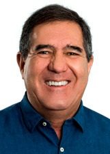
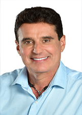
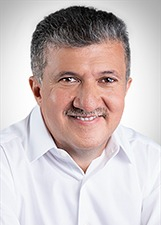
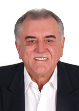
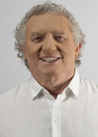
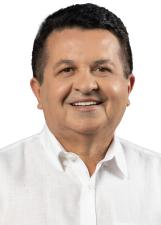
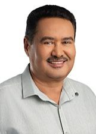
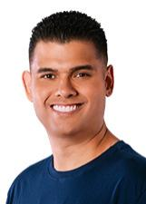

Ceará
Quem ocupa os cargos hoje e quem assume em 2027.
Resultado provisórioTSE, capturado em 29/10/2026
Poder Executivo
Administra o governo e executa as leis: saúde, educação, segurança, estradas e o orçamento.
Governador
Elmano de FreitasPT · 2.808.300 votos★ Novato›Quem comanda cada cidade do estado.
Poder Legislativo
Cria as leis, aprova o orçamento e fiscaliza o Executivo.
Senadores (2)
CamiloPT · 3.389.513 votos · eleito em 2022★ Novato no Senado›Cid GomesPDT · 3.228.533 votos★ Novato no Senado›Deputados federais (21)
Bancada federal por partido
21 cadeiras de Ceará
- PL629%
- PDT524%
- PSD314%
- UNIÃO314%
- PT210%
- MDB15%
- PP15%
Do partido com mais cadeiras para o com menos, não por posição política. Cada partido usa a sua cor de marca.
Deputados federais (21): buscar e ver a lista

Luiz GastãoPSD · 96.537 votos · eleito em 2022★ Novato na Câmara›Luizianne LinsPT · 182.232 votos✓ Reeleito›Matheus NoronhaPL · 150.823 votos★ Novato na Câmara›Mauro FilhoPDT · 135.038 votos · eleito em 2022✓ Reeleito›Moses RodriguesUNIÃO · 113.294 votos✓ Reeleito›Priscila CostaPL · 74.773 votos · eleito em 2022★ Novato na Câmara›Robério MonteiroPDT · 151.030 votos✓ Reeleito›Yury do ParedãoPL · 90.425 votos★ Novato na Câmara›Deputados estaduais e distritais (46)
Assembleia por partido
46 cadeiras de Ceará
- PDT1328%
- PT817%
- PL49%
- UNIÃO49%
- MDB37%
- PP37%
- PSD37%
- REPUBLICANOS24%
- AVANTE12%
- CIDADANIA12%
- MOBILIZA12%
- PCDOB12%
- PSDB12%
- PSOL12%
Do partido com mais cadeiras para o com menos, não por posição política. Cada partido usa a sua cor de marca.
Deputados estaduais e distritais (46): buscar e ver a lista

Agenor NetoMDB · 68.289 votos · eleito em 2022✓ Reeleito›Alysson AguiarPCDOB · 55.449 votos · eleito em 2022★ Novato›
Antonio HenriquePDT · 67.148 votos · eleito em 2022★ Novato›Apóstolo Luiz HenriqueREPUBLICANOS · 35.149 votos · eleito em 2022✓ Reeleito›Carmelo NetoPL · 118.603 votos★ Novato›Cláudio PinhoPDT · 82.267 votos · eleito em 2022★ Novato›
DR. Lucílvio GirãoPSD · 52.368 votos · eleito em 2022↺ Retorno›
DR. Oscar RodriguesUNIÃO · 54.066 votos · eleito em 2022★ Novato›Danniel OliveiraMDB · 63.463 votos · eleito em 2022✓ Reeleito›Davi de RaimundãoMDB · 55.112 votos★ Novato›David DurandREPUBLICANOS · 78.419 votos✓ Reeleito›De Assis DinizPT · 63.253 votos★ Novato›Dep Fernando Hugo - DR HugoPSD · 36.880 votos · eleito em 2022✓ Reeleito›Dra SilvanaPL · 83.423 votos✓ Reeleito›Emilia PessoaPSDB · 33.275 votos · eleito em 2022★ Novato›Evandro LeitãoPDT · 113.808 votos · eleito em 2022✓ Reeleito›Felipe MotaUNIÃO · 36.949 votos · eleito em 2022★ Novato›Fernando SantanaPT · 111.639 votos✓ Reeleito›Firmo CamurçaUNIÃO · 57.836 votos★ Novato›Gabriella AguiarPSD · 83.128 votos · eleito em 2022★ Novato›Guilherme LandimPDT · 76.726 votos✓ Reeleito›
Jeová MotaPDT · 68.881 votos✓ Reeleito›João JaimePP · 76.053 votos✓ Reeleito›Juliana LucenaPT · 45.474 votos · eleito em 2022★ Novato›JulinhoPT · 46.082 votos · eleito em 2022↺ Retorno›Jô FariasPT · 47.816 votos★ Novato›Larissa GasparPT · 37.887 votos · eleito em 2022★ Novato›Leonardo PinheiroPP · 56.059 votos · eleito em 2022✓ Reeleito›Lia GomesPDT · 67.000 votos★ Novato›Luana RibeiroCIDADANIA · 51.548 votos · eleito em 2022★ Novato›Lucinildo FrotaMOBILIZA · 21.751 votos · eleito em 2022★ Novato›Marcos SobreiraPDT · 72.183 votos✓ Reeleito›Marta GonçalvesPL · 112.787 votos★ Novato›Missias do MSTPT · 44.853 votos★ Novato›
Moises BrazPT · 63.149 votos✓ Reeleito›Oriel FilhoPDT · 60.642 votos · eleito em 2022★ Novato›Osmar BaquitPDT · 79.769 votos✓ Reeleito›PR.Alcides FernandesPL · 79.207 votos · eleito em 2022★ Novato›Queiroz FilhoPDT · 64.374 votos · eleito em 2022✓ Reeleito›Renato RosenoPSOL · 83.062 votos · eleito em 2022✓ Reeleito›Romeu AldigueriPDT · 90.399 votos · eleito em 2022★ Novato›SalmitoPDT · 56.624 votos · eleito em 2022✓ Reeleito›Sargento ReginauroUNIÃO · 41.635 votos · eleito em 2022★ Novato›Sergio AguiarPDT · 97.522 votos✓ Reeleito›Stuart CastroAVANTE · 17.243 votos · eleito em 2022★ Novato›Zezinho AlbuquerquePP · 85.138 votos✓ Reeleito›Os eleitos de cada cidade do estado.
Poder Judiciário
Julga os conflitos e garante que as leis sigam a Constituição.
Os desembargadores do Tribunal de Justiça e do Tribunal Regional Eleitoral. Não são eleitos.
Poder Executivo
Administra o governo e executa as leis: saúde, educação, segurança, estradas e o orçamento.
Governador
Elmano de FreitasPT · 2.875.573 votos✓ Reeleito›Quem comanda cada cidade do estado.
Poder Legislativo
Cria as leis, aprova o orçamento e fiscaliza o Executivo.
Senadores (3)
CamiloPT · 3.389.513 votos · eleito em 2022★ Novato no Senado›Cid GomesPSB · 3.033.562 votos✓ Reeleito›LuizianneREDE · 2.822.806 votos★ Novato no Senado›Deputados federais (22)
Bancada federal por partido
22 cadeiras de Ceará
- PL418%
- PSB418%
- PSD314%
- PT314%
- MDB29%
- PP29%
- PRD15%
- REPUBLICANOS15%
- SOLIDARIEDADE15%
- UNIÃO15%
Do partido com mais cadeiras para o com menos, não por posição política. Cada partido usa a sua cor de marca; cinza é partido sem cor registrada na fonte.
Deputados federais (22): buscar e ver a lista
Deputados estaduais e distritais (46)
Assembleia por partido
46 cadeiras de Ceará
- PSB1328%
- PT1124%
- PL613%
- PSD37%
- PSDB37%
- PSOL24%
- REPUBLICANOS24%
- UNIÃO24%
- MDB12%
- PP12%
- PV12%
- SOLIDARIEDADE12%
Do partido com mais cadeiras para o com menos, não por posição política. Cada partido usa a sua cor de marca.
Deputados estaduais e distritais (46): buscar e ver a lista

Davi BenevidesPSDB · 38.833 votos★ Novato›Davi de RaimundãoMDB · 95.814 votos✓ Reeleito›David DurandREPUBLICANOS · 49.051 votos✓ Reeleito›De Assis DinizPT · 76.854 votos✓ Reeleito›Domingos FilhoPSD · 74.914 votos↺ Retorno›Dra Mayra PinheiroPL · 34.752 votos★ Novato›Dra SilvanaPL · 66.473 votos✓ Reeleito›Elizeu MonteiroPSB · 70.411 votos★ Novato›Emilia PessoaPSDB · 35.902 votos★ Novato›Fabiola CarneiroPSB · 73.029 votos★ Novato›Felipe VasquesPSDB · 48.104 votos★ Novato›Firmo CamurçaPSD · 67.171 votos✓ Reeleito›Franzé CarneiroPT · 71.685 votos★ Novato›Gabriel BiologiaPSOL · 141.749 votos★ Novato›GadyelPT · 67.370 votos★ Novato›Gardel RolimREPUBLICANOS · 36.236 votos★ Novato›Georgia do MarcelãoSOLIDARIEDADE · 38.288 votos★ Novato›Guilherme LandimPSB · 80.192 votos✓ Reeleito›Ilo NetoPT · 65.004 votos★ Novato›Jade RomeroPT · 85.490 votos★ Novato›James BelUNIÃO · 52.070 votos★ Novato›Jeová MotaPSB · 73.211 votos✓ Reeleito›João JaimePV · 58.478 votos✓ Reeleito›Jô FariasPT · 79.829 votos✓ Reeleito›Lais NunesPT · 92.485 votos↺ Retorno›Leo SuricatePSOL · 39.510 votos★ Novato›Lia GomesPSB · 54.433 votos✓ Reeleito›Liziany MedeirosPT · 102.659 votos★ Novato›Manu PimentaPSB · 69.000 votos★ Novato›Marcos SobreiraPSB · 70.941 votos✓ Reeleito›Marta GonçalvesPSB · 65.340 votos✓ Reeleito›Missias DiasPT · 71.111 votos✓ Reeleito›Moisés BrazPT · 51.453 votos✓ Reeleito›Moses FilhoUNIÃO · 82.423 votos★ Novato›Osmar BaquitPSB · 90.218 votos✓ Reeleito›Paloma NunesPSB · 69.064 votos★ Novato›Pastor FrotaPL · 28.316 votos★ Novato›Romeu AldigueriPSB · 112.303 votos★ Novato›Simão PedroPSD · 42.840 votos★ Novato›Sérgio AguiarPSB · 88.148 votos✓ Reeleito›Tancredo dos SantosPL · 151.396 votos★ Novato›Zezinho AlbuquerquePP · 82.693 votos✓ Reeleito›Os eleitos de cada cidade do estado.
Poder Judiciário
Julga os conflitos e garante que as leis sigam a Constituição.
Os desembargadores do Tribunal de Justiça e do Tribunal Regional Eleitoral. Não são eleitos.
Como ler
★ Novato Primeiro mandato nesta casa (Câmara ou Senado).
✓ Reeleito Já estava no cargo e foi eleito de novo.
↺ Retorno Já teve mandato, mas estava fora.
Sem selo Não conseguimos ligar a pessoa a um mandato anterior. Isso não quer dizer que seja novata: simplesmente não afirmamos nada.
Provisório Só é confirmado na diplomação.